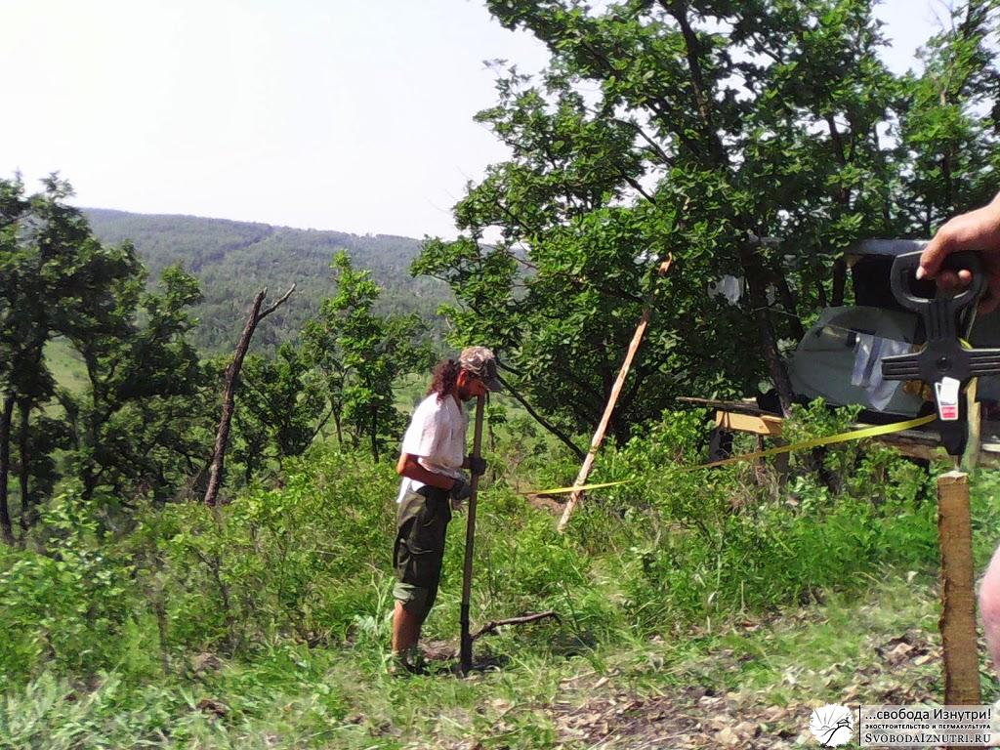
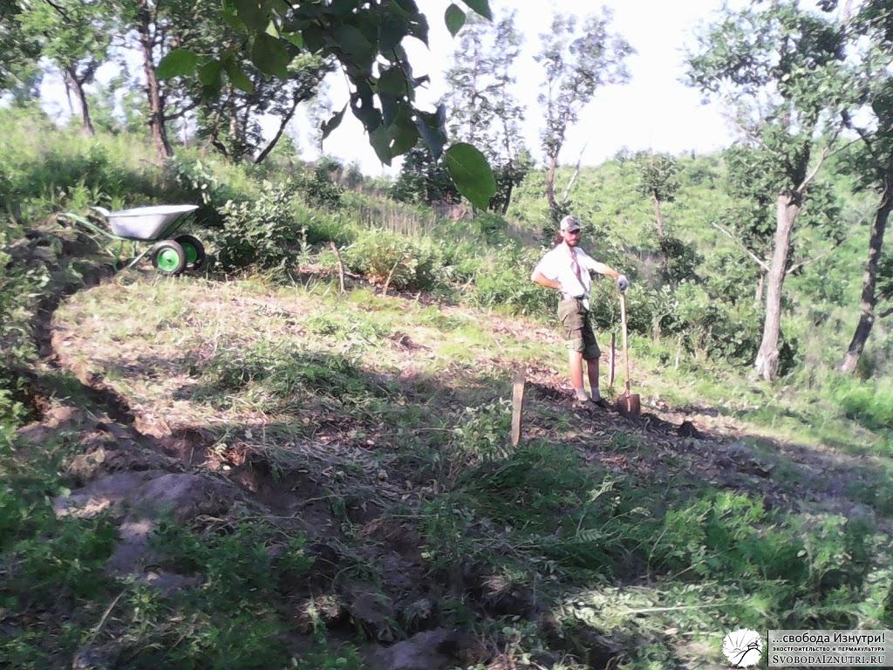

Проект, разметка и начало рытья
Посторойка дома на дереве дала ожидаемые преимущества. Днём, когда стояла страшная жара, и работать было невозможно, мы заползали в тенёчек и прикидывались морскими котиками. Морскими котиками на лежбище.
Это время не тратилось зря. Мы обсуждали планировку будущего дома, конструктивные моменты, думали над оптимизацией техпроцессов.
Причём делали это даже с некоторым уровнем комфорта. Это важно. Этот комфорт позволял взять ручку, бумагу, и начать набрасывать обсуждаемые или принятые решения в виде чертежей, планов, разрезов или просто рисунков. Вот так, лёжа в тени свежепостроенного дома на дереве, мы и накидали первый примерный план нашего будущего домика. И с этим планом наперевес пошли размечать местность.
Разметка

В этом нехитром деле, как и при постройке дома на дереве, нам помогал мой отец. Когда упоминаешь о круглом доме в присутствии профессионального строителя (привыкшего строить прямоугольные коробки), первый вопрос, который он задаёт: «И как вы будете размечать фундамент?"
А очень просто.Находим предполагаемый центр постройки. Ставим колышек. Один человек держит рулетку на центральном колышке. У нас радиус дома — 4 метра, поэтому рулеткой мы отмерили 4 метра, и я прошёл по предполагаемому периметру дома. Если что-то не устраивает, центр дома смещается и процедура повторяется.
Дом мы планировали ориентировать по Солнцу, поэтому на каждом этапе разметки мы сверялись с компасом. Нам повезло, у нас линия склона пролегает точно с юга на север. Т.е. самая верхняя точка разметки точно соответствует северу, самая нижняя — югу.
Очень важно при разметке на наклонной поверхности учесть, что проекция круга на наклонную плоскость имеет форму овала, вытянутого вверх и вниз относительно склона. Мы накинули полметра в самых крайних точках (северной и южной). Практика показала, что расчёт был верным, но не был учтён один важный фактор, о котором мы на тот момент не знали. О нём расскажу в следующий раз.
Также мы накинули полметра на вентзазор между стенами котлована и стенами будущего дома. Плюс, по чертежу в начале статьи видно, что этот вентзазор в западной части расширяется и превращается в сени-тамбур-погреб. Из-за упомянутого неучтённого фактора, в итоге получилось немого не так.
Вот так, нарезав несколько кругов по периметру будущего дома, мы утвердили местоположение центра и начали разметку (фото сверху). Я встал в самой южной точке, отмерил 5 метров (4 метра радиус дома + полметра на кривизну овала + полметра на вентзазор), отсмотрел ровно сверху вниз в точку на земле, воткнул в неё лопату и вырезал кусок дёрна диаметром в штык лопаты.
А дальше пошёл метить по кругу, также с замером рулеткой и лопатой. Не забывая про расширение вентзазора в западной части и превращение его в сени-тамбур (см чертёж в начале статьи). Метил точки с расстоянием в шаг (чуть меньше метра). Весь описанный процесс мы проделали с утра до обеда.
Начало рытья
На обеде опять лежали в тени, т.к. стояла невыносимая жара. Но как только Солнышко стало опускаться к горизонту и стало возможно шевелиться, я начал работу. Я соединял выкопанные лунки. Получалась траншея со снятым дёрном.
Дёрн не пропадал зря. Из него мы выкладывали дренажные стены вокруг котлована. Стены из дёрна, поливаемые дождями и согреваемые солнечными лучами, по моим расчётам за лето должны были намертво врасти в землю и срастись между собой. Так и получилось.
Дренажными я их назвал потому, что в первую очередь их цель — заставить дождевую воду обтекать будущий дом, ну а в период стройки — не дать ей размывать котлован. Это было отличное решение, соседи без таких стен столкнулись с проблемой размытия и обрушения стен котлована.

За вечер траншея была прорыта полностью. Я прокопал весь периметр дома, около 50 метров.
На фото слева по западному колышку видно, что линия внешнего периметра котлована больше дома. Но и линию стен я тоже прокопал. Чтобы можно было походить по виртуальным помещениям дома и попредставлять как тут будет хорошо и уютно!
Всё описанное произошло 23 июня 2013 года, и эту дату мы считаем датой начала стройки нашего дома! С этого дня начались наши трудовые будни.